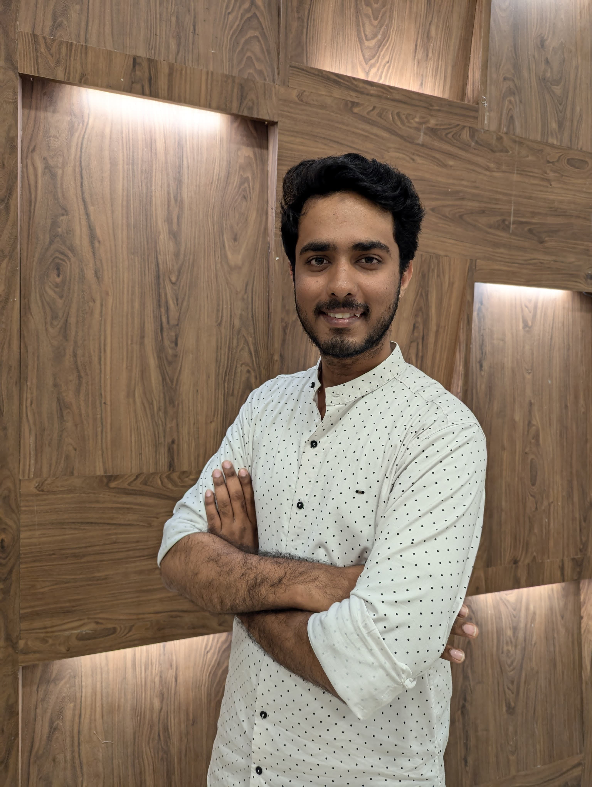

Discover my journey, values, and aspirations

I am a passionate Electronics and Communication Engineering student at Dr. Ambedkar Institute of Technology, with a strong interest in technology development, AI, IoT, and embedded systems. I am driven by a love for creating innovative solutions that have real-world impact, especially in the field of automation and digital systems.
Beyond academics, I am senior member of Nanogram technical club, where I guide fellow students through workshops, hackathons, and collaborative projects. With a foundation in machine learning, deep learning, and embedded systems, I have had the opportunity to work on groundbreaking projects such as VISNAV, a system aimed at enhancing road safety through augmented reality.
When not working on technical projects, I enjoy exploring the latest advancements in AI and IoT, and sharing my knowledge through blogs and talks. I am always looking to collaborate with like-minded individuals to drive positive change in the tech community.